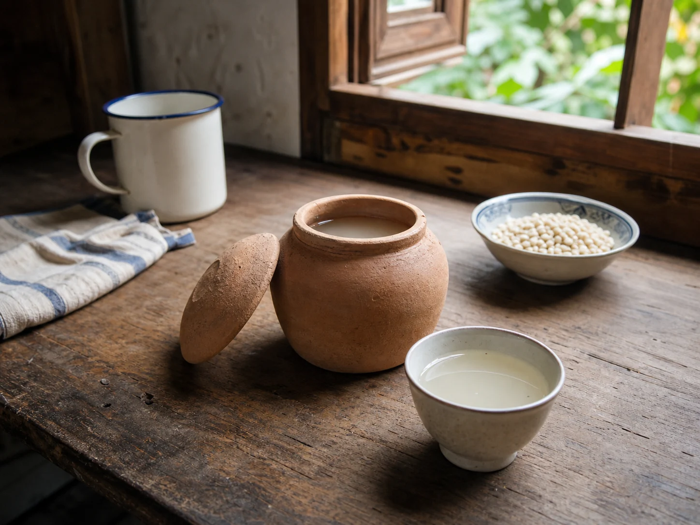

Barley Water in the Clay Pot
The grain seller measured barley into a paper parcel, and my grandmother turned it into a pale drink that cooled on the kitchen window ledge in a small clay pot.

The grain seller's paper parcel
The barley sat in a deep bin at the grain shop, pale and slightly dusty from the road. The seller ran her hand across the top, lifted a small scoop, and shook the grains back into the bin before measuring again. My grandmother wanted the cleanest handful, not the largest one.
She folded the paper parcel twice and tucked it beside the vegetables. At home, the barley went into a white bowl while rice was still steaming on the stove. The two grains belonged to different parts of the day, even though they came from the same shop.
A pot beside the window
My grandmother rinsed the barley until the water ran almost clear, then put it into a small clay pot with fresh water. The pot was squat, brown, and marked with a pale line near its base. It sat on the back burner until the grains softened and the water took on a cloudy color.
She did not add sugar. Once the pot had cooled enough to touch, she moved it to the kitchen window ledge. The open window let in the smell of wet leaves and the sound of bicycles from the lane.
The cup that waited
There was one cup beside the clay pot, but the drink rarely belonged to one person. My uncle drank first after returning from the market, then my grandmother poured what remained into two smaller bowls. The last serving was usually the palest because the pot had been topped up with water during the afternoon.
Barley water occupied the same summer shelf as mung bean soup and the jar of sour plum drink. They were simply the cool, ordinary drinks that appeared when the kitchen had finished its louder work.